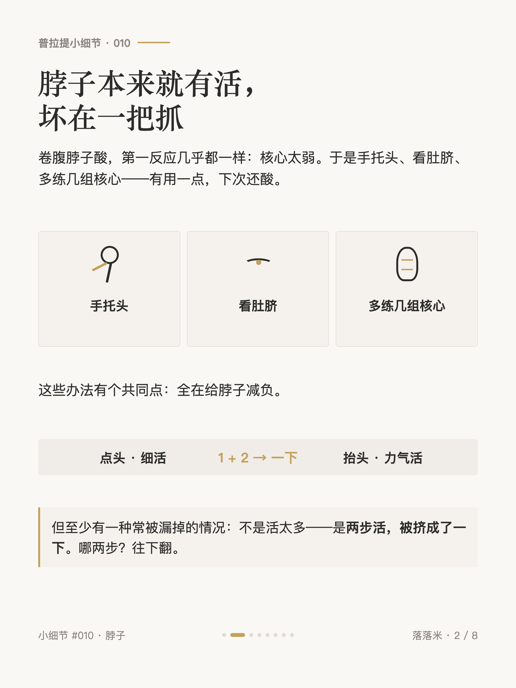
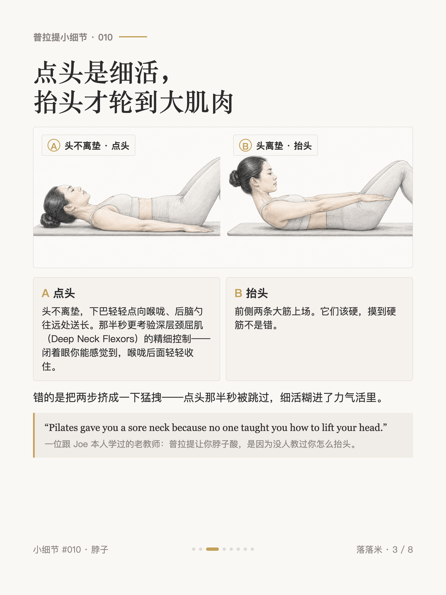
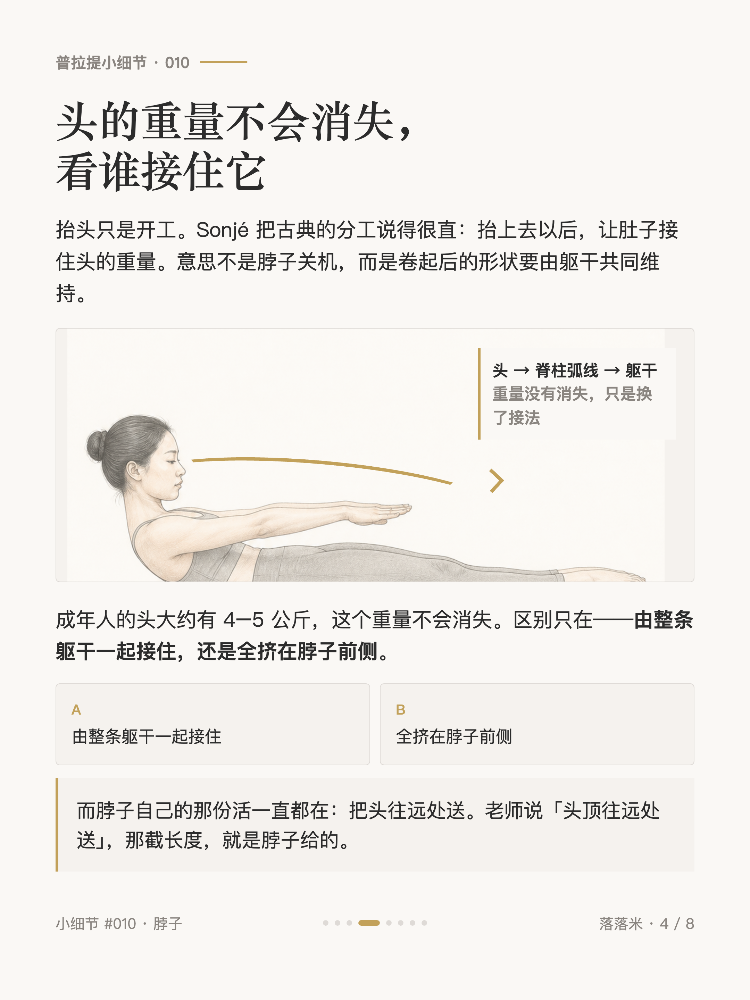
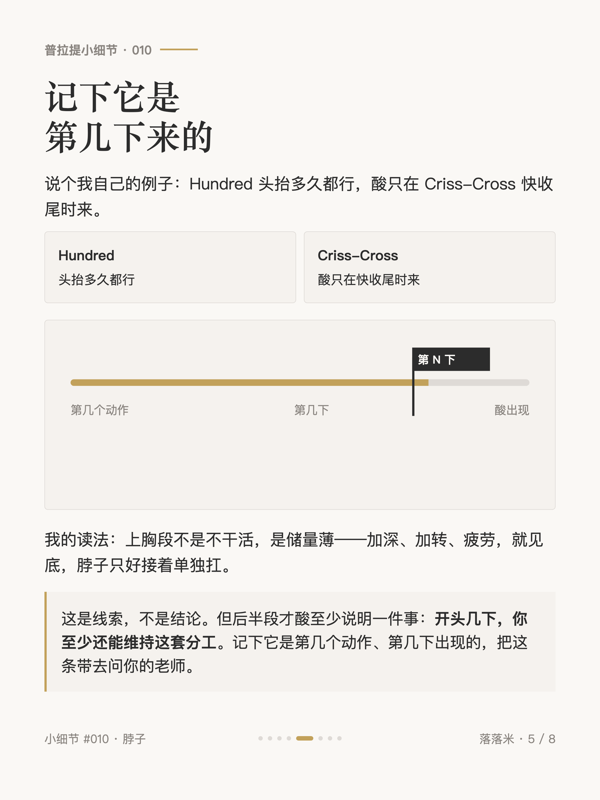
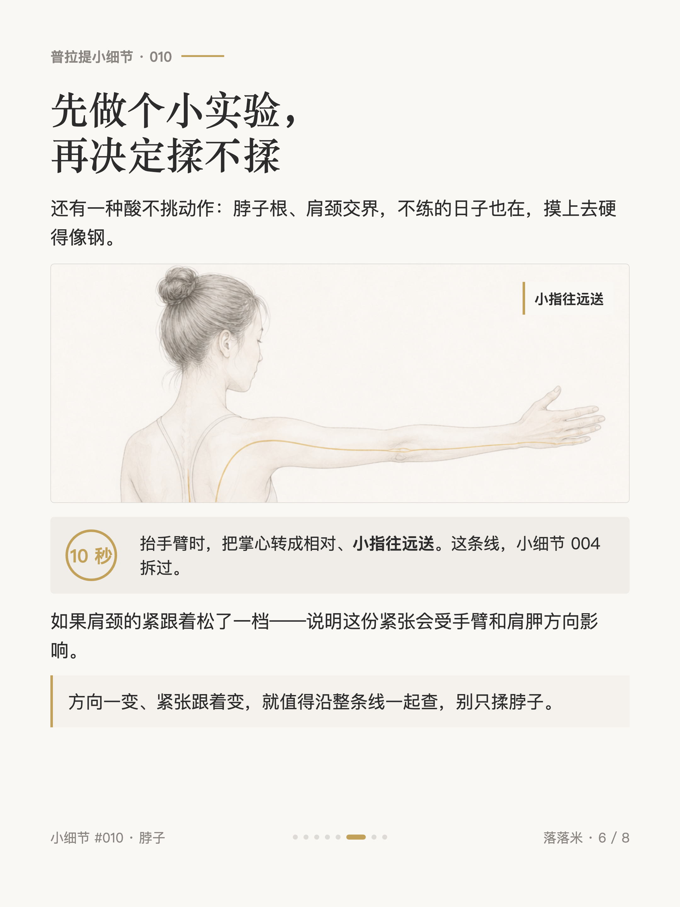
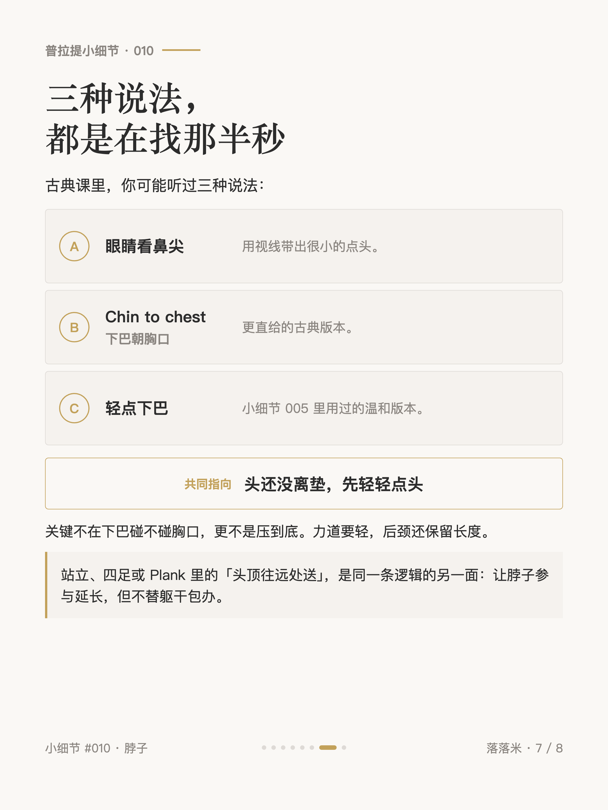
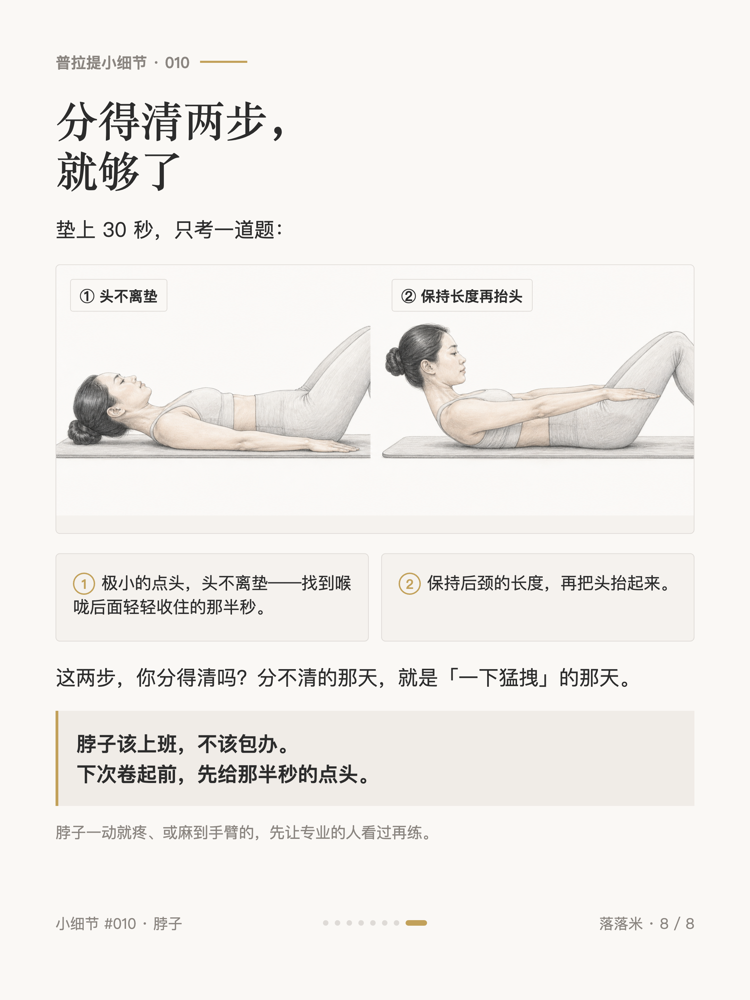

普拉提小细节 #010
普拉提抬头之前，还有一步

1 / 8

2 / 8

3 / 8

4 / 8

5 / 8

6 / 8

7 / 8

8 / 8
← 左右滑动浏览全部卡片 →
抬头之前，还有一步。
头还没离垫，先做一个很小的点头。眼睛看鼻尖、Chin to chest、轻点下巴——不同老师用不同说法，在仰卧抬头这一步里，它们都可以指向那半秒。
这半秒更考验深层颈屈肌的精细控制。接着头离垫，前侧的大筋上场；它们变硬本身不是错。错的是两步被挤成一下猛拽。
Sonjé 把后面的分工说得很直：抬起来以后，让肚子接住头的重量。意思不是脖子关机，而是卷起后的形状由躯干共同维持。脖子自己的工作，是在这条弧线里继续把头送远。
我自己的例子：Hundred 抬多久都行，酸只在 Criss-Cross 收尾时来。它不能替我下结论，但能留下线索——记下第几个动作、第几下出现，比「我脖子酸」更有用。
卡片里还有一个 10 秒的手臂方向实验，和一个我上垫试过的 30 秒自测。
脖子该上班，不该包办。下次卷起前，先给那半秒的点头。
（一直疼、或麻到手臂的，先让专业的人看过再练。）